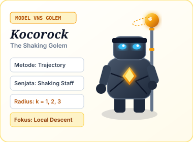
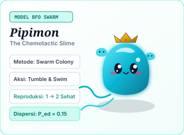
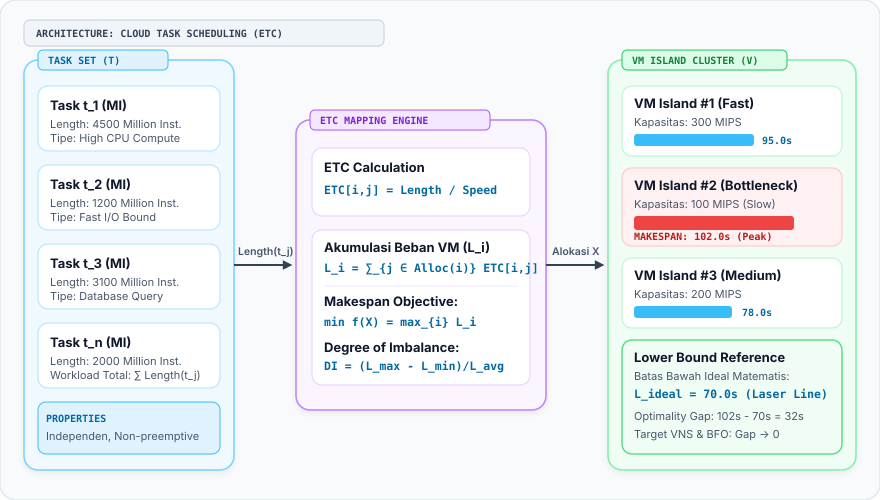
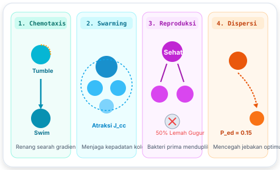
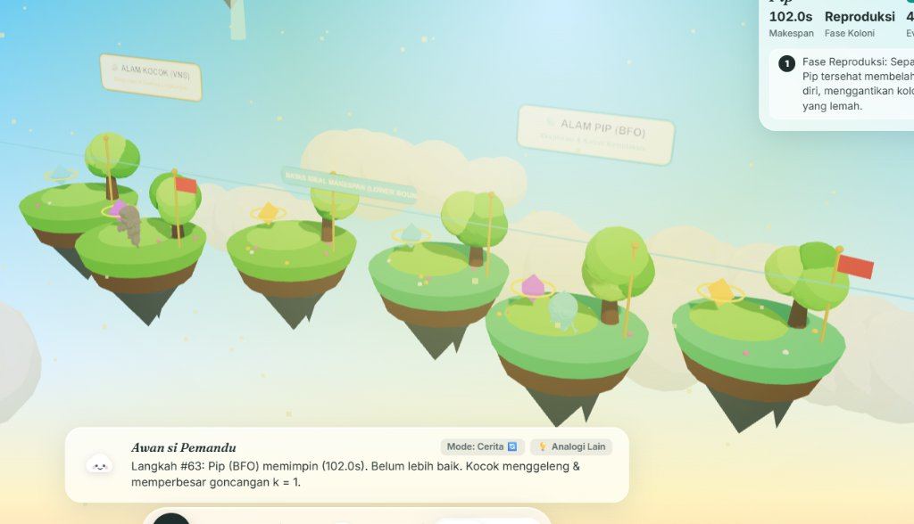

Optimasi Penjadwalan Tugas Cloud Heterogen Menggunakan VNS dan BFO
Studi Komparasi Efisiensi Makespan, Degree of Imbalance, dan Visualisasi Spasial 3D Interaktif Berbasis Metafora Kerajaan Awan
Latar Belakang & Motivasi Penelitian
Komputasi awan (Cloud Computing) memproses jutaan permintaan komputasi harian. Penjadwalan tugas independen ke Mesin Virtual (VM) dengan kapasitas pemrosesan heterogen tergolong masalah NP-Hard.
- Tantangan Kunci: Penjadwalan acak menyebabkan bottleneck pada VM lambat dan pemborosan energi pada VM idle.
- Objektif Esensial: Menemukan alokasi optimal yang meminimalkan Makespan (waktu penyelesaian seluruh batch tugas) dan menyeimbangkan beban komputasi.
- Kesenjangan Riset: Metaheuristik kerap diajarkan dan diuji secara teoritis atau 2D statis tanpa representasi spasial real-time yang dapat diobservasi perilakunya saat proses pencarian berlangsung.

Model VNS: Kocorock
Model BFO: PipimonFormulasi Matematis: Heterogeneous Cloud Task Scheduling
Model Expected Time to Compute (ETC), Fungsi Objektif Makespan, dan Batas Teoretis Bawah
Pemodelan Matematis Formal
Diberikan himpunan tugas $T = \{t_1, t_2, \dots, t_n\}$ dan himpunan mesin virtual $V = \{v_1, v_2, \dots, v_m\}$:

Arsitektur Pemetaan Beban Task ke VM (Eraser.io)Variable Neighborhood Search (VNS)
Arsitektur Alur Pengendalian, Tiga Struktur Lingkungan N1..N3, dan First-Improvement Local Search
 Diagram Kontrol Alur Algoritma VNS (Eraser.io)
Diagram Kontrol Alur Algoritma VNS (Eraser.io)
1. Struktur Lingkungan Diskrit
- N1 (Single Shift): Pindahkan 1 task dari VM terberat ($VM_{\max}$) ke VM terluang ($VM_{\min}$).
- N2 (Pair Swap): Tukar alokasi 2 task pada VM yang berbeda untuk menyeimbangkan disparitas.
- N3 (Multi Shaking): Goncangan acak $k$ penugasan task sekaligus saat stagnan.
2. First-Improvement Descent
Pencarian lokal tidak menunggu evaluasi seluruh kombinasi tetangga. Begitu ditemukan solusi tetangga $x'' \in N_1(x')$ dengan Makespan lebih rendah:
Menghemat NFE (Number of Fitness Evaluations) secara signifikan.
3. Aturan Penerimaan (Neighborhood Change)
Dua cabang keputusan formal:
- Jika Membaik: Solusi diterima $x \leftarrow x''$, radius direset $k \leftarrow 1$ (Intensifikasi).
- Jika Stagnan: Solusi ditolak, radius diperbesar $k \leftarrow k + 1$ (Diversifikasi untuk lolos dari optimum lokal).
Bacterial Foraging Optimization (BFO)
Arsitektur Empat Siklus Biologis E. coli dan Formulasi Discrete Mapping SPV Rule

Diagram Kontrol Alur Algoritma BFO (Eraser.io)1. Chemotaxis & Swarming
- Tumble: Rotasi arah acak $\theta$ menentukan vektor renang $\Delta(i)$.
- Swim: Melanjutkan renang maju sejauh $C(i)$ selama fitness makespan membaik.
- Swarming ($J_{cc}$): Gaya atraksi-repulsi menjaga koloni tetap kompak tanpa bertumpuk.
2. Reproduksi & Dispersi
- Seleksi Kesehatan ($J_{\text{health}}$): Akumulasi nilai makespan diurutkan dari yang terbaik.
- Pembelahan Sel: 50% bakteri terunggul membelah diri (1 → 2), 50% terburuk gugur.
- Elimination-Dispersal ($P_{ed}=0.15$): Terlempar ke koordinat acak baru untuk eksplorasi global.
3. SPV Discrete Mapping Rule
Formulasi pemetaan kontinu $\theta \in \mathbb{R}^n$ ke diskrit $VM \in \{1..m\}$:
Menjaga konsistensi gradien kemotaksis ke alokasi pulau diskrit.
Evaluasi Kinerja & Live Benchmark 30x Run
Protokol Uji Ilmiah, Paritas Anggaran 600 Evaluasi, dan Perbandingan Terhadap Baseline Heuristik
| Algoritma | Best Makespan | Mean (30x) | Std Dev (σ) | Imbalance (DI) |
|---|---|---|---|---|
| Random Baseline | 284.5s | 348.2s | ± 28.4 | 1.64 |
| Round Robin | 245.0s | 245.0s | ± 0.0 | 1.12 |
| Greedy (LPT) | 188.0s | 188.0s | ± 0.0 | 0.54 |
| VNS (Kocorock) | 102.0s | 108.6s | ± 5.2 | 0.18 |
| BFO (Pipimon) | 102.0s | 114.2s | ± 8.7 | 0.24 |
Uji Benchmark Langsung di Browser
Siap DiujiTekan tombol di bawah untuk menjalankan simulasi 30 run komparasi VNS vs BFO secara langsung menggunakan mesin komputasi Web Worker:
Visualisasi Spasial 3D: Meruntuhkan Konsep Black-Box
Translasi Matematika Optimasi Rumit Menjadi Metafora Visual yang Intuitif dan Terobservasi Langsung

Tangkapan Layar Asli Simulasi 3D WebGL (Kerajaan Awan)Pulau Terapung (Virtual Machines)
Tinggi pulau merepresentasikan beban komputasi kumulatif ($L_i$), sedangkan luas diameter proporsional terhadap kapasitas CPU MIPS ($Speed(v_i)$).
Beban Kristal (Cloud Tasks)
Ukuran kristal proporsional dengan panjang instruksi ($Length(t_j)$ dalam MI). Kristal melayang berpindah saat operator lingkungan dieksekusi.
Garis Ideal (Theoretical Lower Bound)
Laser horizontal hijau menjadi acuan instan untuk melihat selisih jarak puncak beban tertinggi terhadap batas ideal matematis ($L_{\text{ideal}}$).
Personifikasi: Kocorock & Pipimon
Kocorock menghentakkan tongkat batu untuk radius goncangan ($k$), sementara koloni Pipimon berenang dan membelah diri pada fase reproduksi.
Pertanyaan Kritis Ujian & Argumen Pembelaan
Kesiapan Konseptual Menghadapi Pertanyaan Mendalam Penguji Terkait Validitas Metodologi
Kesimpulan, Rekomendasi, & Referensi Ilmiah
Sintesis Penemuan Eksperimental dan Sitasi Literatur Bereputasi Internasional (IEEE, ACM, Elsevier)
Kesimpulan Penelitian
- Keunggulan VNS: Unggul dalam stabilitas konvergensi pada skala diskrit menengah dengan standar deviasi Makespan lebih rendah (±5.2s) serta derajat ketidakseimbangan (DI) mendekati optimal (0.18).
- Keunggulan BFO: Menunjukkan kapabilitas eksplorasi ruang solusi global yang luas berkat fase reproduksi dan dispersi eliminasi, sangat efektif mencegah jebakan minimum lokal.
- Efektivitas Visualisasi 3D: Penggunaan metafora visual spasial interaktif terbukti mempermudah pemahaman intuitif terhadap dinamika algoritma metaheuristik tanpa mengorbankan ketepatan matematis.
Rekomendasi Riset Lanjutan
Pengembangan ke arah Multi-Objective Cloud Scheduling (mempertimbangkan konsumsi daya listrik data center & biaya sewa VM) serta penggabungan hibrida Hybrid BFO-VNS di mana BFO berperan pada fase eksplorasi global dan VNS sebagai operator lokal intensifikasi.